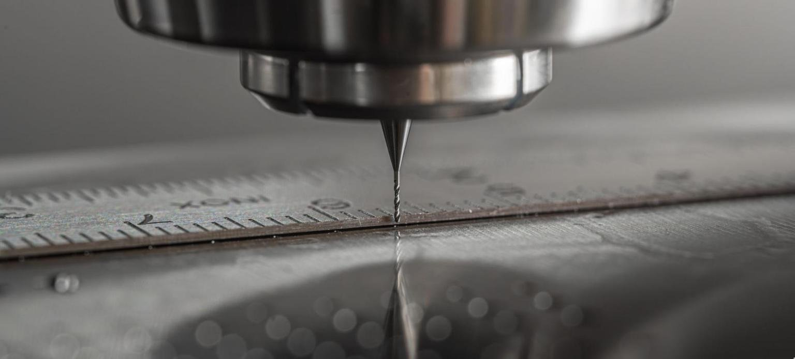
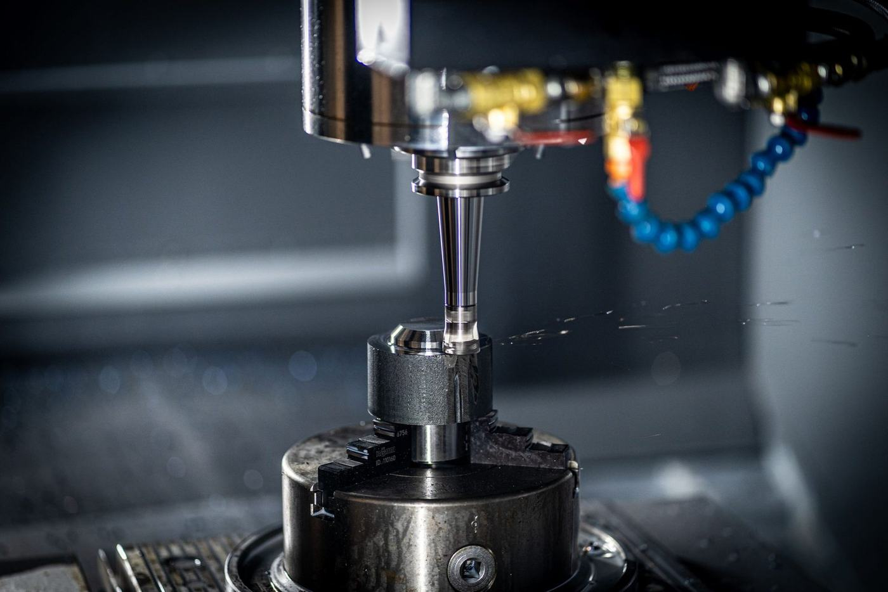

CNC master patterns
Master patterns and plugs, machined to your CAD for composite molds.
Every good composite mold starts with an accurate pattern. We machine patterns and plugs in tooling board, high-density MDF and foam on our own 3-axis CNC, finish them to a mold-ready surface and check them by 3D scan.

3-axis CNC to ±0.01 mm on suitable features
Tooling board, MDF and foam
Sealed and finished surfaces
3D scan report on request
Pattern materials
| Material | Use | Notes |
|---|---|---|
| Epoxy or polyurethane tooling board | Accurate patterns and direct molds | Stable, fine surface, good for repeat molds |
| High-density MDF | Large patterns and plugs at low cost | Sealed and compensated for moisture |
| Foam (PU) | Concept models, large low-load plugs | Coated before molding |
| Aluminum (through our network) | Patterns that must last or take heat | Machined and checked by our engineers |
How we make a pattern
- CAD check. We check your model for draft, split lines and the flange area, and add machining stock where the surface will be finished.
- Machining. Roughing and finishing passes on our 3-axis CNC. Large patterns are built from bonded blocks.
- Surface. The pattern is sealed, primed and sanded to the finish your mold needs.
- Check. We 3D-scan the pattern and compare it with your CAD before the mold is taken.
Why the pattern matters

Accuracy carries through
Errors in the pattern end up in every mold and part. We measure it before moving on.

Surface carries through
A good pattern finish means less sanding and polishing on the mold and parts.

3-axis or 5-axis?
Most patterns are made on 3-axis machines with careful setups. Deep undercuts go to multi-axis machines in our network.
Questions about patterns
Can you machine only the pattern?
Yes. We machine patterns for customers who make their own molds, and ship them packed for transport.
What is the largest pattern you can make?
It depends on the shape. Large patterns are built in sections and bonded. Send us the size and we will confirm.
Which files do you need?
A STEP or IGES file is best. We can also work from a drawing or a scan of an existing part.
Related: Carbon fiber molds · CNC machining · Custom carbon fiber parts
Photos are illustrations from a free stock library, not our own projects. Ask us for photos of real work.
Need a pattern machined?
Send your CAD file. An engineer will reply with the material, schedule and a quotation.